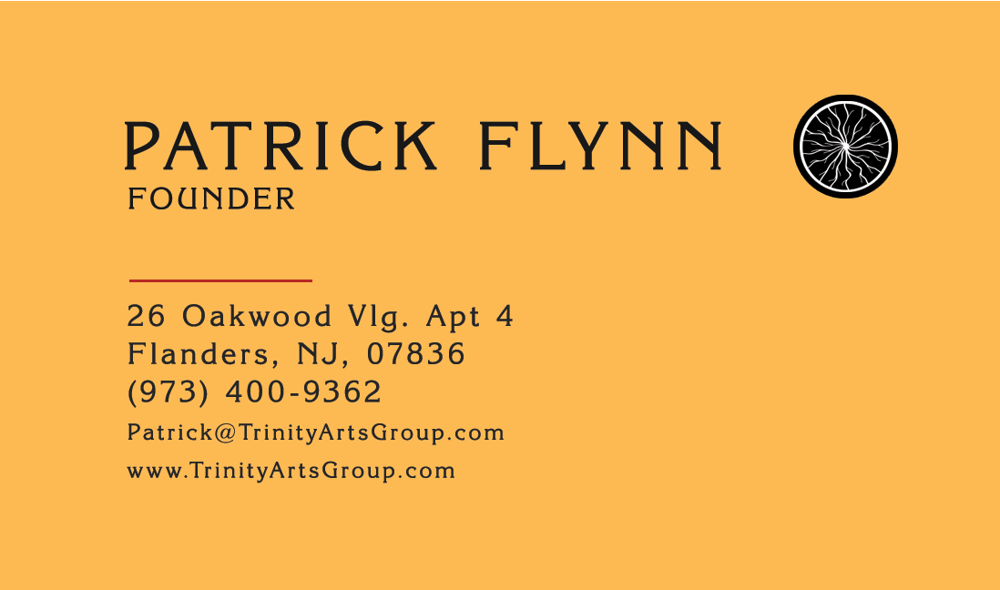
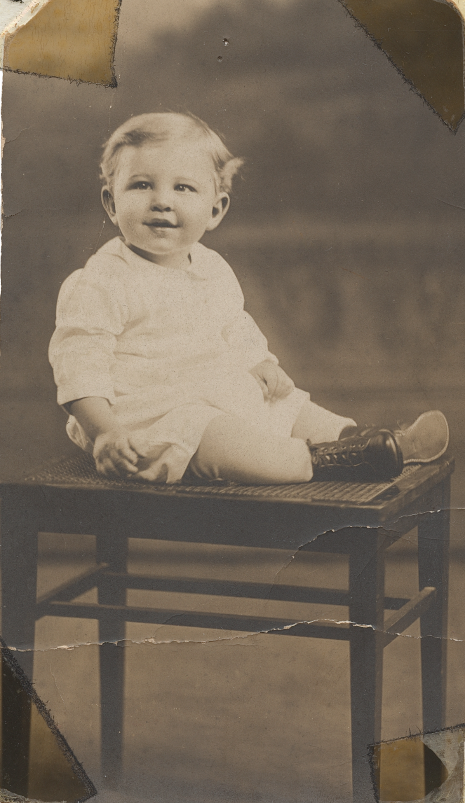
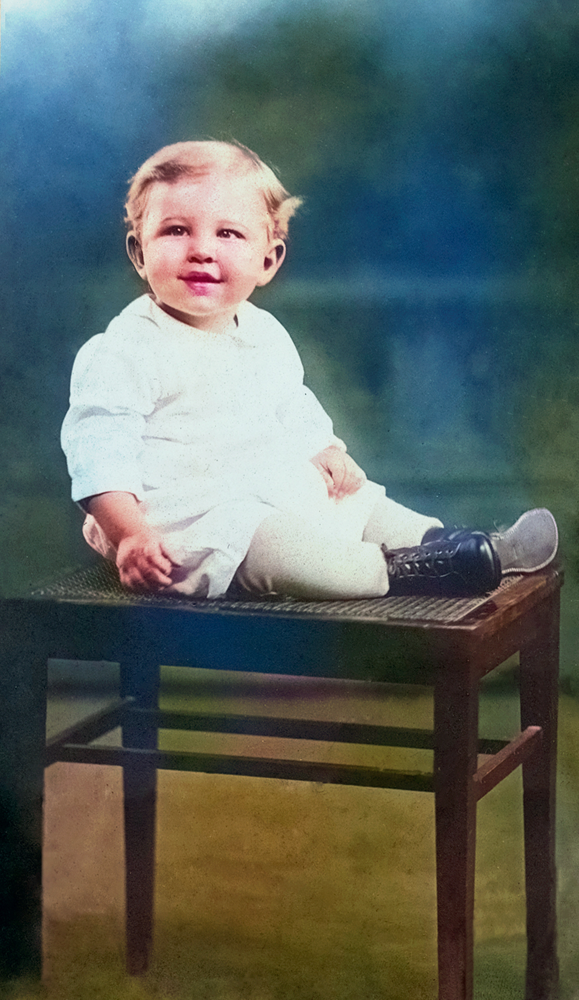
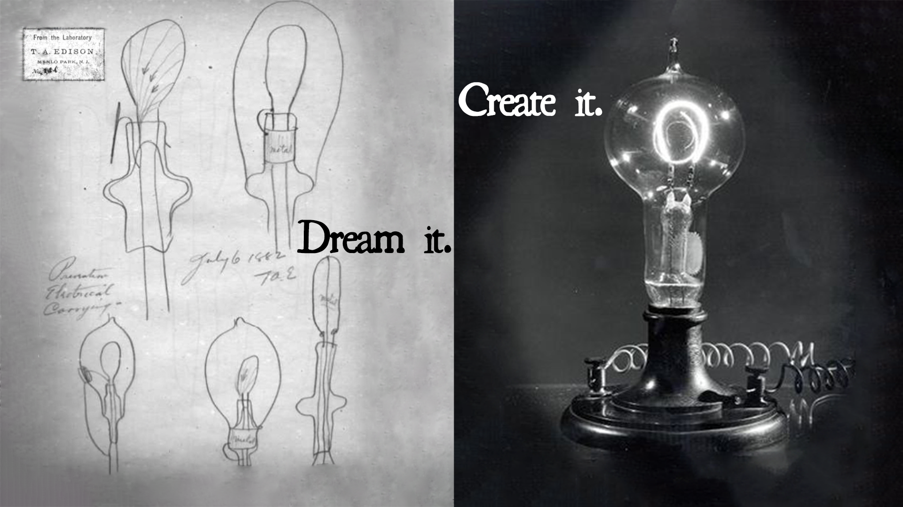

Rutgers Class Showcase
Welcome to my showcase page! Here, you can explore various projects I've completed during my time at Rutgers. Each project reflects my learning journey and the skills I've developed in design, animation, and restoration.


Business Card
I seized upon the opportunity to be able to market my unique skillset and talent to the largest possible audience. In doing so, I thought deeply on the legacy of the brand as the name "Trinity" was my father's pipefitting business for 30+ years. I also considered the history New Jersey has in film. I began by first cannibalizing the logo of an earlier production company I had, as a marker for the front card, with the updated logo on the reverse. I utilized a gold and black palette to evoke nostalgia as the business is geared towards archival restorations of film negatives, photo restorations, and digital transfers.
Hover over the card image to see the reverse.
"A Tug of War" - Adobe Animate Example
I started by breaking down two assets I had used previously in the Animate course into individual rigs. Through a combination of classic tweening, and public domain materials I tried to come up with a simple, clear, and funny little animation. I made two 4 second loops to simulate the back-and-forth pushing and pulling the turkey was doing. I then did likewise for the elephant's back and forth movement. I was aiming for an Abbott and Costello, or Laurel and Hardy type feeling, and hopefully I've achieved it.
Photo Restoration


This project meant a lot to me, as I chose for this restoration a baby photo of my maternal grandfather: Warren Seward Hopkins. It was so exciting to learn a bit more about my Mother's side of the family – while simultaneously getting the best photo for the project's needs. This was, I believe, an old linotype photo that was from a disintegrating photo album – however it was an album, I learned, that was literally hand compiled and annotated by my grandfather himself, written in his hand and by his old typewriter. The unique discoloring on the sides from the degrading masking tape, the photo album fibers surrounding it, the extensive cracking, pinholes, and scratches on the print made it a suitable example to restore.

"Fantomas" Magazine Cover
I remember seeing a poster for the forgotten 1931 thriller Fantomas in one of the auditoriums at the School of Visual Arts and the logotype always stuck with me, as did the name. I took that kernel of an idea and ran with it – exploring my latest interests with the undersung classic comedian Buster Keaton, in his many hats as actor, director, writer and stunt person – as well as the author Charles Beaumont and the near completely forgotten 1960's television artist and actor-writer Ernie Kovacs. The main image utilized is a publicity photo of Buster Keaton taken on set of his famous 1928 film "The Cameraman", now in the public domain.

Social Media Ad
This social media advertisement showcases the integration of modern design principles with compelling visual storytelling to create engaging promotional content for digital platforms. It is a work in progress, as finding original photographs for the original carbon filament incandescent lamps are proving mighty difficult to come by, unfortunately. But, this is a step in the right direction.